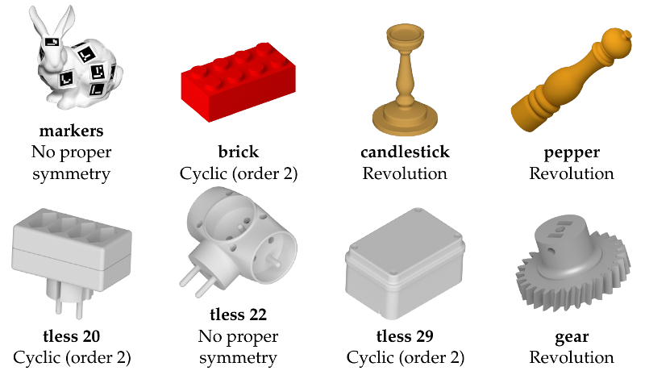

The datasets consist in a total of 2601 independent scenes depicting various numbers of object instances in bulk, fully annotated for evaluation of object detection and pose estimation methods.
Synthetic datasets are made of scenes representing the inside of a bin, in which a random number of object instances have been dropped (in some scenes, there are no visible instances at all).
Real data consists similarly in scenes of various numbers of object instances (between 0 and 11) lying on a surface at various distances from the camera. Each instance was covered by 19 fiducial markers. We used two different background surfaces: a planar one (markers flat, 308 scenes), representative of the typical bottom of a bin; and a bumpy surface (markers bump, 325 scenes), increasing the variability of poses and producing a pose distribution more consistent with the scenario of many instances piled up. An additional dataset of 46 scenes (markers clutter) targets the problem of object detection and pose estimation in a cluttered environment.
The proposed evaluation methodology is based on the symmetry class of the object considered .The symmetry class depends on what static configurations of the object we wish to distinguish, and this choice is not necessarily obvious. For example, the gear object could be considered as an object with a cyclic symmetry of order 2 -- i.e. an invariance under rotation of \(1/2\) turn about a given axis -- , a cyclic symmetry of order its number of teeth, or a revolution symmetry depending on the level of details considered. We considered this latter option in our experiments, and synthesize the choices of symmetry classes we made below:
Original models of tless objects are taken from the T-LESS dataset (http://cmp.felk.cvut.cz/t-less/).
(Origin of the other models to come)
The datasets can be downloaded here (not yet complete): https://drive.google.com/open?id=0B2h14hEw1jRRNGpKdnRlWUxOMzA.
Please cite the following paper if you use this dataset:
Romain Brégier, Frédéric Devernay, Laetitia Leyrit and James L. Crowley, "Symmetry Aware Evaluation of 3D Object Detection and Pose Estimation in Scenes of Many Parts in Bulk", in IEEE International Conference on Computer Vision Workshop (ICCVW), 2017.